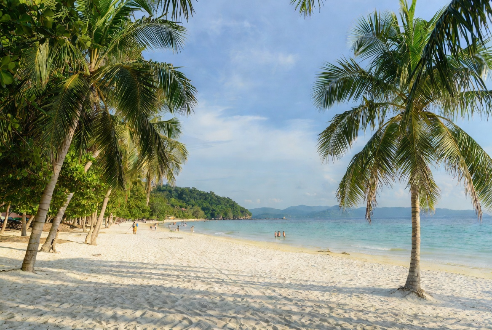
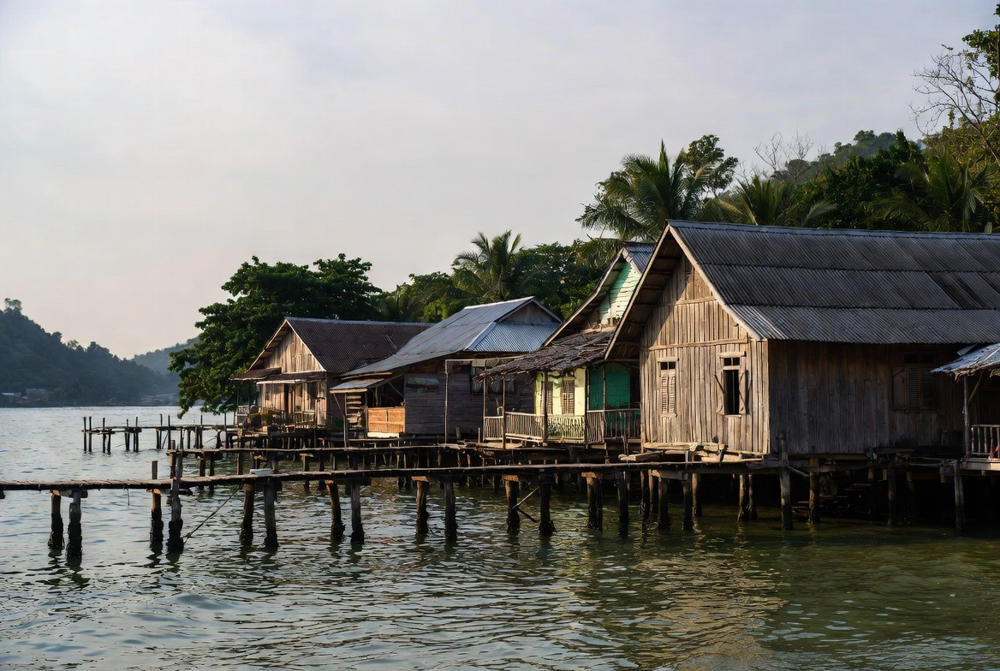
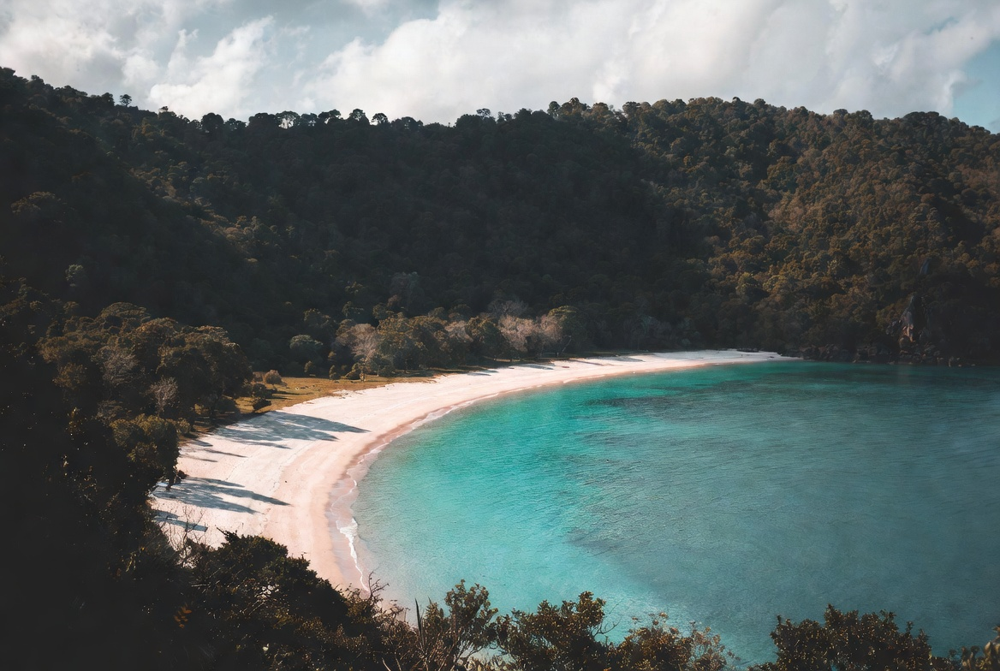

Koh Lanta Travel Guide
Koh Lanta is a long, laid-back island in Krabi province that attracts travellers looking for good beaches without the intensity of Phuket or Phi Phi. The west coast is lined with sandy bays, the pace is slower, and the island still feels more local in places. It is popular with families, couples and divers who want space to breathe. Most of the action is seasonal — many places close or slow down significantly during the rainy months.

How to Get There
There is no airport or bridge. Everyone arrives by boat or via the car-ferry system from the mainland.
From Krabi
The most common route is a minivan from Krabi Town or the airport to the pier, followed by two short car-ferry crossings. Total time is usually 1.5–2.5 hours. Shared transfers are easy to arrange.
From Phi Phi
Direct speedboats and ferries run in high season (roughly November–April) and take about 1 hour.
From Phuket
Minivan-plus-ferry packages take 3–4 hours. High-season speedboats via Phi Phi are also available but more expensive.
Boats and transfers arrive at Saladan Pier in the north. Scooters are the easiest way to explore the long island once you are there.

Climate & Best Time to Visit
Koh Lanta follows the Andaman coast seasons.
Best time: November to April
Dry weather, calm seas and the full range of boat trips and beach activities. December to March is peak season with the highest prices and most visitors.
Shoulder months: November and April
Still good conditions with fewer crowds and better rates than mid-winter.
Rainy season: May to October
The southwest monsoon brings more rain and rougher seas. Many resorts and restaurants close or operate on reduced hours. The island is much quieter and greener, but beach and boat options are limited.

What You’ll Love Doing Here
The west-coast beaches are the main draw. Klong Dao near Saladan is convenient and family-friendly with shallow water. Just south, Long Beach (Phra Ae) is long, wide and popular for swimming, walking and sunset bars. Further down the coast you reach Klong Khong, Klong Nin and the more dramatic southern bays such as Kantiang Bay and Bamboo Bay.
Lanta Old Town on the east coast is worth a half-day or evening visit. Wooden houses on stilts, a few restaurants and a more traditional feel make a nice contrast to the beach strips.
Diving and snorkelling are strong points. Day trips to the nearby islands (Koh Haa, Koh Rok, Four Islands tours including Emerald Cave) are popular. The national park at the southern tip has a lighthouse trail and quieter beaches.
Evenings are low-key. Beach bars, fire shows and relaxed dinners are the norm rather than big nightlife. Scooter hire makes it easy to move between beaches and find your preferred pace.
Pros and Cons
What people love
- Long sandy beaches with a relaxed atmosphere
- Less intense and less crowded than Phuket or Phi Phi
- Good diving and island day-trip options
- Charming Old Town for a change of scenery
- Suitable for families and longer, slower stays
What can frustrate people
- Many businesses close or reduce service in the rainy season
- Getting there involves transfers and ferries
- Some beaches have limited facilities or stronger currents
- Scooter is almost essential to explore the full length of the island
- Can feel quiet if you are looking for nightlife or constant activity
Why Go
Koh Lanta is the place for travellers who want Andaman beaches and clear water without the full tourist intensity of the more famous islands. Stay near Long Beach or Klong Dao for convenience, head further south for more peace, visit Old Town for a different flavour, and take at least one boat trip to the surrounding islands. It is seasonal, so plan around the dry months if beach time and boat trips are priorities. For many people, the slower pace and space to unwind are exactly why they choose Lanta over busier neighbours.